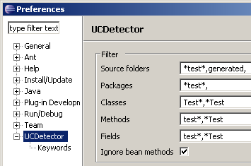
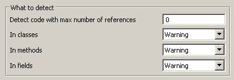
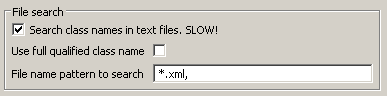
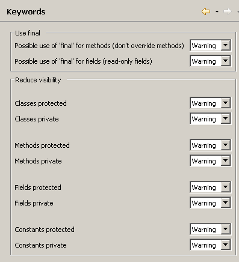
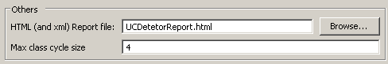

|
|
 UCDetector: Unnecessary Code Detector
UCDetector: Unnecessary Code Detector
Preferences
Select menu: Window/Preferences.../UCDetector
Filter
It is possible to filter java elements (and all its children),
which should not be checked by UCDetector. A simple regular expression is used:
- All filters are "case sensitive"
- ?: Match one character
- *: Match 0 or more characters
You can enter more than 1 entry, using the separator ","
Ignore bean methods:
Ignore methods, which use the java bean convention. For example
public String getName();
public void setName(String name);
public boolean isValid();
|

|
|
Detect
Detect code with max number of references:
Number of found references, which are necessary to mark java code as problem.
0 means: If a class has no references, mark it with UCDetector
In classes, in methods, in fields:
Select how problems should be marked. There are 3 possibilities:
- Error: Mark the problem using error markers
- Warning: Mark the problem using warning markers
- Ignore: Don't create markers for the problem
Select what kind of code should be marked:
- Classes: Select error level for classes
- Methods: Select error level for methods
- Fields: Select error level for fields
File name pattern to search:
It is possible to add a file pattern. Full qualified class names (org.ucdetector.Example)
found in this files will get no marker for "0 references found". But text
search is slow, if there are many text files!
|


|
Keyword
Possible use of protected or
private:
Select error level for visibility. This option will create markers for code
which could be protected, default or
private.
This is code, which has only references in same package or same class.
Possible use of final for fields:
This option will create markers for fields, which could be
final.
This are fields, which have no write access.
Possible use of final for methods:
This option will create markers for methods, which could be
final.
This are methods, which:
- Don't implement interfaces
- Don't override methods
- Are not overridden
- Methods in classes, which do not extend other classes
Maybe this rules are not OK for you! Anyway: Apply changes for this rule carefully.
|

|
Other
HTML report:
Enter file name, if you want to create a report like this:
| Nr | Warn level | Location | Description |
| 1 | Warning | org.ucdetector.MixedExample.
declaration(MixedExample.java:4) | Change visibility of "MixedExample" to default |
| 2 | Warning | org.ucdetector.MixedExample.
unusedMethod(MixedExample.java:7) | Method "unusedMethod" has 0 references |
| 3 | Warning | org.ucdetector.MixedExample.
makePrivateMethod(MixedExample.java:10) | Method "makePrivateMethod" has 0 references |
| 4 | Warning | org.ucdetector.MixedExample.
useFinal(MixedExample.java:5) | Use "final" for field "useFinal" |
To create custom reports change:
ECLIPSE_HOME/plugins/org.ucdetector_*.jar/org/ucdetector/report/html.xslt
Max cycle size:
For cycle detection you can choose the "max cycle size". If there are many
cycles in your code, a big number here makes cycle detection very slow!
|

|
|